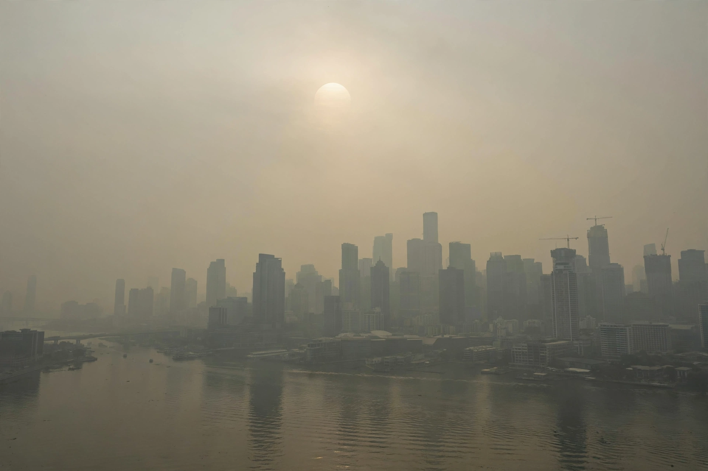

Air pollution

Air pollution is the contamination of air by substances — particles, gases and biological material — at concentrations harmful to health, ecosystems and the climate. It is among the largest environmental risks to human health worldwide, implicated in several million premature deaths each year. See also Pollution.
The main pollutants are particulate matter (PM2.5 and PM10), nitrogen oxides, sulphur dioxide, ground-level ozone, carbon monoxide and volatile organic compounds, from transport, industry, power generation, agriculture and household burning.
Sources and behaviour
Combustion dominates: diesel and petrol vehicles, coal and biomass burning, industrial furnaces. Agriculture adds ammonia, which reacts in the air to form secondary particles. Weather traps pollution in temperature inversions and valleys, producing episodes from London's lethal Great Smog of 1952 to the severe winter smog of modern megacities; wildfire smoke now regularly degrades air across whole continents.
Some pollutants double as climate agents: black carbon warms, sulphate aerosols cool, and ozone is both a pollutant and a {L('Greenhouse_gas')}.
Health and control
Fine particles penetrate deep into the lungs and bloodstream and are linked to heart and lung disease, stroke and dementia; children and outdoor workers are especially exposed. Control has repeatedly succeeded where seriously attempted: leaded petrol was eliminated worldwide by 2021, sulphur in fuels and shipping has been capped, and many Western cities' air is far cleaner than in the 1970s, even as pollution remains severe across much of Asia and Africa.
Monitoring ranges from regulatory networks to low-cost sensors and satellite instruments, and indices translate concentrations into public advice. See Environmental protection.
See also: Pollution · Environmental protection · Greenhouse gas · Fossil fuel · Smog